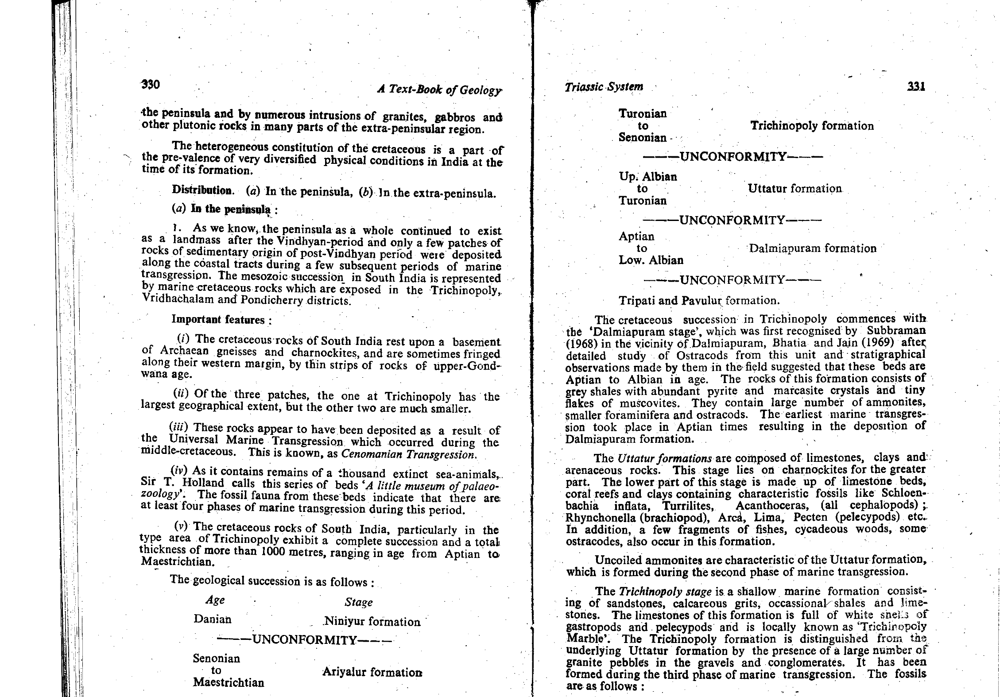

In Indian stratigraphy and paleontology (M.S. Krishnan, Geology of India and Burma, Ch. 15; Ramakrishnan & Vaidyanadhan, Geology of India, Vol. 2, Ch. 24; Blanford, 1862), the Cretaceous succession of the Tiruchirappalli (Trichinopoly) district in Tamil Nadu constitutes the most complete, world-renowned marine Cretaceous reference section in peninsular India. Deposited during global Cenomanian-Campanian marine transgressions across the newly rifted eastern margin of Gondwana, it rests unconformably upon Archean charnockites and gneisses:
| Lithostratigraphic Formation | Standard Age | Diagnostic Lithologies | Key Index Fossils & Biostratigraphy |
|---|---|---|---|
| 3. Ariyalur Formation (Top) | Campanian to Maastrichtian | Unconsolidated sands, fossiliferous calc-sandstones, white clays, and shell limestones. | Ammonites: Pachydiscus, Baculites, Sphenodiscus. Foraminifera: Globotruncana gansseri. Extends to K-Pg boundary. |
| 2. Trichinopoly Formation (Middle) | Turonian to Coniacian | Coarse grits, shell limestones, calcareous sandstones, and gypseous clays. | Ammonites: Placenticeras tamulicum, Lewesiceras. Bivalves: Inoceramus, Spondylus. |
| 1. Uttatur (Ootatoor) Formation (Base) | Upper Albian to Cenomanian | Basal conglomerates, coral reef limestones, fine yellow sandstones, and phosphatic nodule-bearing gypseous clays. | Ammonites: Schloenbachia inflata, Acanthoceras rhotomagense, Turrilites costatus. |
H.F. Blanford of the Geological Survey of India established the canonical tripartite division of the Trichinopoly Cretaceous basin into:
Later workers (Rama Rao, 1956) recognized the topmost Danian (Paleocene) beds as the Niniyur Formation, but the classical Cretaceous sequence consists strictly of Uttatur, Trichinapoli, and Ariyalur.

Correct Answer: (A) Ariyalur Formation — The Upper Cretaceous rocks of the Tiruchirappalli area are classically classified into three major Formations: Uttatur, Trichinapoli, and Ariyalur Formation.
| Geographic Basin | Lithostratigraphic Formations | Depositional Setting |
|---|---|---|
| Cauvery Basin (Trichinopoly) | Uttatur → Trichinopoly → Ariyalur → Niniyur | Passive margin shallow marine shelf (Bay of Bengal opening) |
| Narmada Valley (Bagh Beds) | Nimar Sandstone → Nodular Limestone → Deola-Chirakhan Marl → Coralline Limestone | Estuarine to shallow marine inlet (Arabian Sea transgression) |
| Spiti Basin (Himalaya) | Giumal Sandstone → Chikkim Formation | Tethys deep to pelagic shelf ocean |
| Central India (Lameta Beds) | Infratrappean cherty limestones, green sands (Titanosaur dinosaur bones) | Fluvio-lacustrine terrestrial environments |